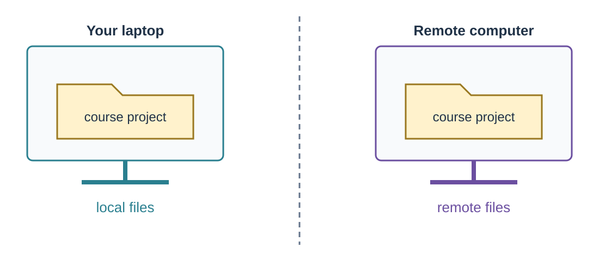
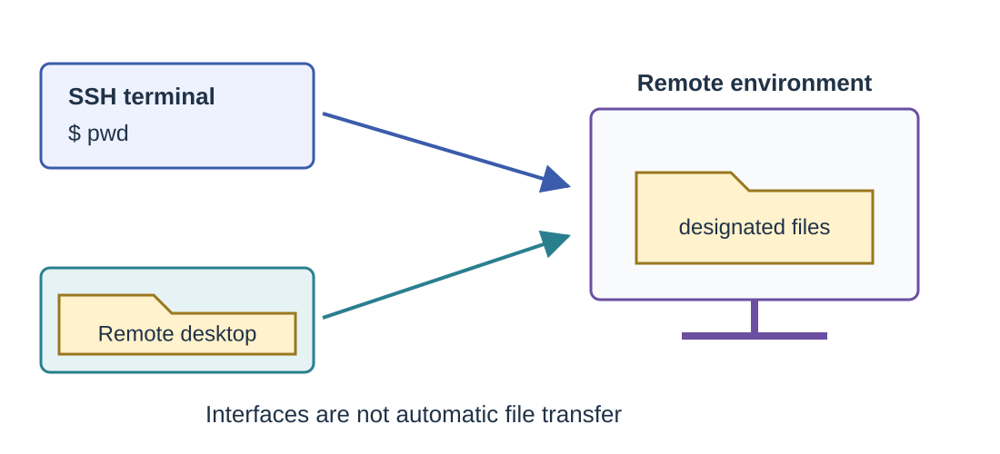
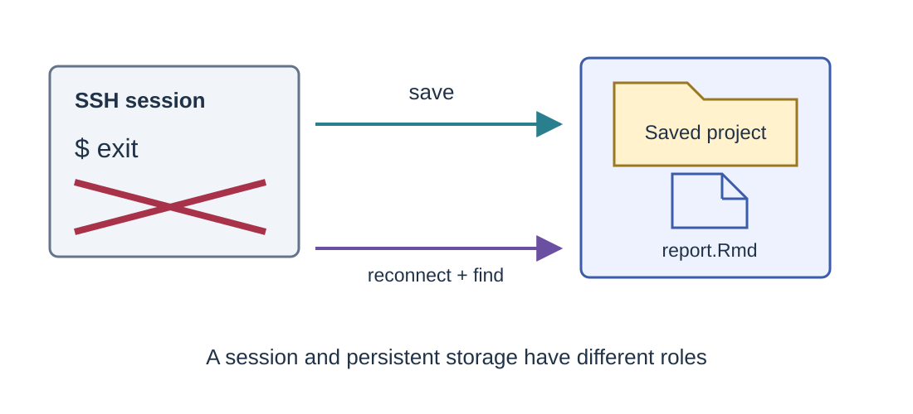
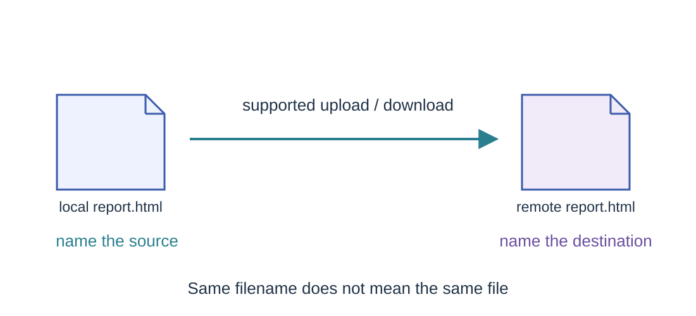
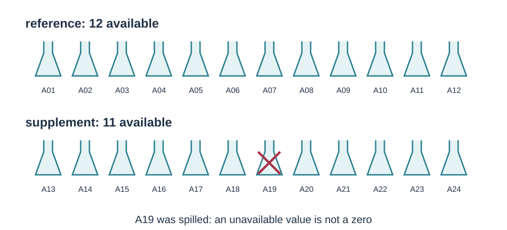
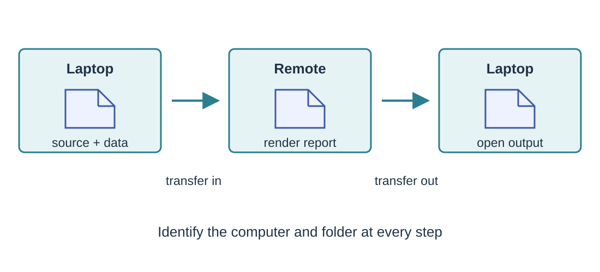
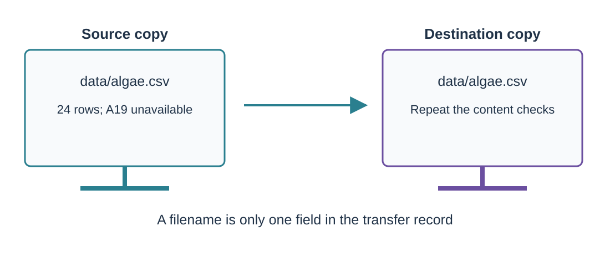
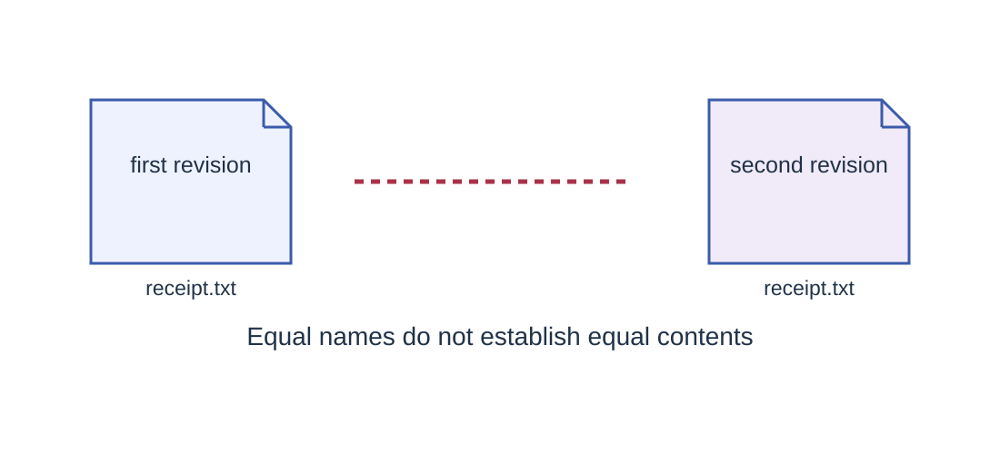
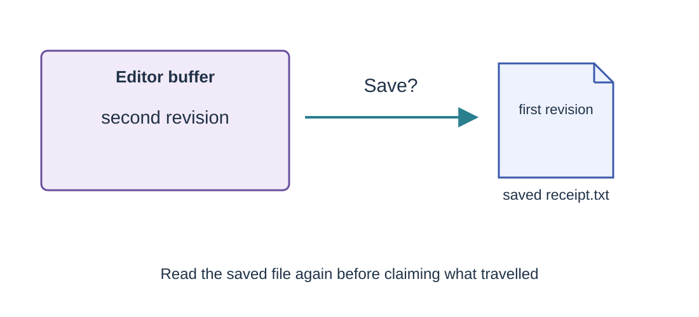
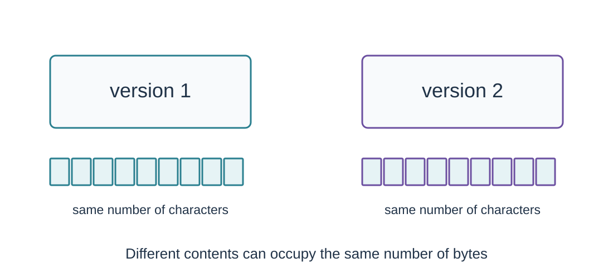

Day 22 — work on a remote computer and bring the result back
Yesterday’s single-cell table needs about 24 GB of RAM; your laptop has 16 GB or less. Research groups solve this by logging in to a bigger, shared Linux computer and running the same R analysis there. But then there are two computers, each with its own files. You rendered a report remotely: where is it, and how do you get it back?
Today you will:
This is a hands-on day. The remote service details (host, login, transfer method) will be supplied separately; until then you rehearse locally. On Day 23 you run a small study from question to report.
course project with a report.Rmd. They are separate copies.

After connecting, run in the remote shell:
hostname # which computer answered?
pwd # which folder am I in on that computer?
ls # what is in that folder?reports/remote-log.txt. A large service may have several computers with different names.exit ends the connection and returns you to your laptop’s shell. Run pwd again: now it shows a laptop folder.exit closes the session (the connection), not the remote disk.cd to the folder, and the saved files are still there.

In the remote R console:
getwd()
file.exists("data/algae.csv")
algae <- readr::read_csv("data/algae.csv",
show_col_types = FALSE)
nrow(algae) # 24
sum(!is.na(algae$biomass_mg)) # 23
algae$biomass_mg[algae$culture_id == "A19"] # NASame checks on both computers, same answers: 24, 23, NA.

report.Rmd in the provided R application.Rscript -e 'rmarkdown::render("report.Rmd")'
The report rendered remotely, but local Downloads is empty. Before rendering again, check:
An empty Downloads folder does not mean the render failed. Rendering again only makes another copy in the same unexpected place.
Write reports/transfer-plan.txt first:
data/algae.csv) and the checks to repeat;
receipt.txt can hold different versions.
report.Rmd does not change an old HTML until you render again.
version 1 and version 2 have the same number of characters, so the same file size.identical(readLines(a), readLines(b)).
| Idea | Key fact |
|---|---|
| Why remote | data larger than laptop RAM need a bigger computer (Day 21) |
| Two computers | each has its own disk; same folder names are separate copies |
| SSH / remote desktop | a terminal or a screen on the remote computer; neither copies files |
hostname, pwd, exit |
which computer, which folder; leave without deleting saved files |
| Transfer | makes a copy; name source, destination and direction |
| Checks | repeat nrow, available counts and named records after copying; equal size ≠ equal contents |
| Missing result | find it on the remote side, then check the transfer and destination |
Next (Day 23, mini-study): plan and analyse a small biological study from question to report.
Now: Open exercises · Quiz. Leave with reports/remote-log.txt, reports/transfer-plan.txt, the receipt and the audit. Until access details arrive, do the local rehearsal and mark the remote steps pending.